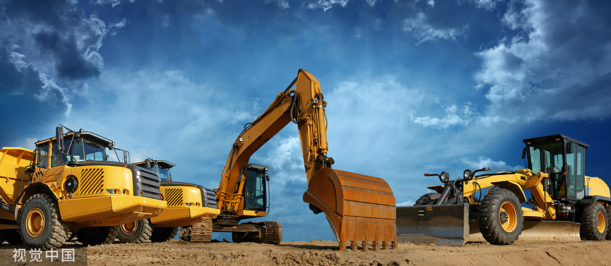

工程机械租赁市场规模巨大，全球工程机械租赁市场营业额为400亿美元左右，约相当于工程机械总产值的25%。在北美、欧盟和日本等发达国家市场，通过租赁形式销售的工程机械占当地市场的65%，已经成为最主要的销售途径。

中国工程机械租赁市场每年仅为150-200亿元，不到国内工程机械设备使用量的10%，与国际水平存在着巨大的差距。同时，国内施工机械设备的供求市场又都非常巨大，可以预见，随着企业体制改革的深化，在租赁规律的作用下，其潜力与空间巨大，蕴育着巨大的租赁商机。
由于中国工程机械租赁业务因为极具市场潜力，如今已成为中外企业展开角逐的领域。全国工程机械租赁企业已经超过11500家，但是企业普遍规模小，以中小型租赁公司为主，全国资产在5000万元以上的工程机械专业租赁公司不过百余家。而在日本，中型租赁公司约占行业的92%;作为世界租赁业最成熟的美国，其10%的租赁公司为大型上市公司。